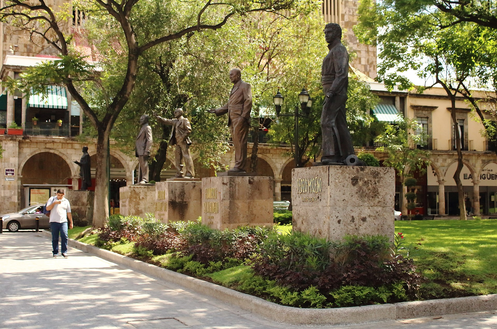

Guadalajara History
Guadalajara was founded on 14 February 1542 by Cristóbal de Oñate, a Basque conquistador, as the capital of the Kingdom of Nueva Galicia, part of the Viceroyalty of New Spain. After 1572, the Royal Audiencia of Guadalajara, previously subordinate to Mexico City, became the only authority in New Spain with autonomy over Nueva Galicia, owing to rapidly growing wealth in the kingdom following the discovery of silver. By the 18th century, Guadalajara had taken its place as Mexico's second largest city, following mass colonial migrations in the 1720s and 1760s. During the Mexican War of Independence, independence leader Miguel Hidalgo y Costilla established Mexico's first revolutionary government in Guadalajara in 1810. The city flourished during the Porfiriato, with the advent of the industrial revolution, but its growth was hampered significantly during the Mexican Revolution. In 1929, the Cristero War ended within the confines of the city, when President Plutarco Elías Calles proclaimed the Grito de Guadalajara. The city saw continuous growth throughout the rest of the 20th century, attaining a 1 million metro population in the 1960s and passing 3 million in the 1990s.
Tourism
The city has hosted numerous important international events, such as the first Cumbre Iberoamericana in 1991; the Third Summit of Heads of State and Governments of Latin America, the Caribbean, and the European Union in 2004; the Encuentro Internacional de Promotores y Gestores Culturales in 2005; and the 2011 Pan American Games. It was named the American Capital of Culture in 2005 and the Ciudad Educadora (Educator City). in 2006. It was recognized as Mexico's first Smart City due to its use of developing technology. During each government period, the city went through structural plans with which new areas and commercial hubs were born and with which transnational corporations and international industries arrived in the city. The city housed the first shopping malls in Mexico. The city expanded rapidly before merging with the Zapopan municipality. Among the developments created during this period were the Guadalajara Expo, the light rail, shopping centers, the expansion of streets and avenues, and the birth and development of road infrastructure, services, tourism, industrial, etc. The first shopping center in Latin America emerged in the city, the first urban electric-train system in Latin America, and the first autonomous university in Mexico. A 2007 survey entitled "Cities of the Future," FDi magazine ranked Guadalajara first among major Mexican cities and second among major North American cities in terms of economic potential, behind Chicago. The magazine also rated it as the most business-friendly Latin American city in 2007.
Culture
The cultural life in Guadalajara is one of the widest in the hemisphere. The city has one of the largest cultural agendas on the continent, in addition to the interest of the government, the University of Guadalajara, and private institutions, to underline the cultural attributes of the city and the State of Jalisco. The city exhibits works by international artists and is a must-see for international cultural events whose radius of influence reaches most of the countries of Latin America, including the southwestern United States. Its historic center houses colonial buildings of a religious and civil character, which stand out for their architectural and historical significance, and constitute a rich mixture of styles whose root is found in indigenous cultural contributions (mainly of incorporated into the Mozarabic and the castilian), and later in modern European influences (mainly French and Italian). The historic center also has an infrastructure of museums, theatres, galleries, libraries, auditoriums, and concert halls. Some of these buildings date from the sixteenth and seventeenth century, such as the Cathedral of the Archdiocese of Guadalajara, among others. In terms of media, the city has several radio stations focused on culture, being [Red Radio University of Guadalajara (XHUG-F) one of the most important and the one that is transmitted to the rest of the state and neighboring states and internationally through the Internet; it is also the first broadcaster via Pod Cast in the country, the city produces a fully cultural channel; XHGJG-TV dedicated to support, dissemination, and cultural entertainment and broadcast on open television, Guadalajara being the only city to produce a cultural cutting channel in the country in addition to the Mexico, D.F.A. Mexico City. Guadalajara publishes the most important
Music and Art
Mariachi music is strongly associated with Guadalajara both in Mexico and abroad even though the musical style originated in the nearby town of Cocula, Jalisco. The connection between the city and mariachi began in 1907 when an eight-piece mariachi band and four dancers from the city performed on stage at the president's residence for both Porfirio Díaz and the Secretary of State of the United States. This made the music a symbol of west Mexico, and after the migration of many people from the Guadalajara area to Mexico City (mostly settling near Plaza Garibaldi), it then became a symbol of Mexican identity as well Guadalajara hosts the Festival of Mariachi and Charreria, which began in 1994. It attracts people in the fields of art, culture and politics from Mexico and abroad. Regularly the best mariachis in Mexico participate, such as Mariachi Vargas, Mariachi de América and Mariachi los Camperos de Nati Cano. Mariachi bands from all over the world participate, coming from countries such as Venezuela, Cuba, Belgium, Chile, France, Australia, Slovak Republic, Canada and the United States. Plaza de los Mariachis. The events of this festival take place in venues all over the metropolitan area, and include a parade with floats. In August 2009, 542 mariachi musicians played together for a little over ten minutes to break the world record for largest mariachi group. The musicians played various songs ending with two classic Mexican songs "Cielito Lindo" and "Guadalajara." The feat was performed during the XVI Encuentro Internacional del Mariachi y la Charreria. The prior record was 520 musicians in 2007 in San Antonio, Texas. In the historic center of the city is the Plaza de los Mariachis, named such as many groups play here. The plaza was renovated for the 2011 Pan American Games in anticipation of the crowds visiting. Over 750 mariachi musicians play traditional melodies on the plaza, and along with the restaurants and other businesses, the plaza supports more than 830 families.
Sports
Guadalajara is home to four professional football teams; Guadalajara, also known as Chivas, Atlas, C.D. Oro and Universidad de Guadalajara. Guadalajara is the most successful and the most followed club in the country, They have won the Mexican Primera División a total of 12 times, and have won the Copa MX four times. In 2017 Chivas became the first team in Mexican football history to win a Double (a league and cup title) in a single season on two different occasions and their first since the since the 1969–70 season. Chivas went on to win the 2018 CONCACAF Champions League final against Major League Soccer side Toronto FC, the second time they have won the torunament. Chivas won the first ever CONCACAF Champions League and are the only Guadalajara-based football team to win the tournament. Atlas also plays in the Mexican Primera División. They are known in the country as 'The Academy', hence they have provided Mexico's finest football players, among them: Rafael Márquez, Oswaldo Sánchez, Pável Pardo, Andrés Guardado, and from "Chivas," Javier (Chicharito) Herandez, and Mexico national team's former top scorer Jared Borgetti from Atlas. Atlas also won several Championships on Amateur Tournaments, and first Football Championship of a Guadalajara Team back in 1951. They have not won any more first division championships since. Estudiantes was associated with the Universidad Autónoma de Guadalajara A.C.. It played in the Primera División, with home games in the Estadio 3 de Marzo (March 3 Stadium, for the University's 1935 date of founding). They've won also a single Championship back in 1994 as they defeated Santos. The team moved to Zacatecas and became the Mineros de Zacatecas in May 2014. Estadio Charros, built for the 2011 Pan American Games. Starting in October 2014, Guadalajara rejoined the Liga Mexicana del Pacífico baseball tournament with the Charros de Jalisco franchise in play at the Athletic Stadium. Charreada, the Mexican form of rodeo and closely tied to mariachi music, is popular here. The biggest place for Charreada competitions, the VFG Arena, is located near the Guadalajara Airport founded by singer Vicente Fernández. Every September 15, charros make a parade in the downtown streets to celebrate the Charro and Mariachi Day. Guadalajara hosted the 2011 Pan American Games. Since winning the bid to host the Games, the city had been undergoing extensive renovations. The games brought in more than 5,000 athletes from approximately 42 countries from the Americas and the Caribbean. Sports included aquatics, football, racquetball, and 27 more, with six others being considered. COPAG (the Organizing Committee for the Pan American Games Guadalajara 2011) had a total budget of US$250 million with the aim of updating the city's sports and general infrastructure. The center of the city was repaved and new hotels were constructed for the approximately 22,000 rooms that were needed in 2011. The new bus rapid transit (BRT) system, Macrobús, was launched in March and runs along Avenida Independencia. The Pan-American village was built around the Bajio Zone. After the Games, the buildings will be used for housing. There are already 13 existing venues in Guadalajara that the games will use, including the Jalisco Stadium, UAG 3 de Marzo Stadium, and the UAG Gymnasium. Eleven new sporting facilities were created for the event. Other works included a second terminal in the airport, a highway to Puerto Vallarta and a bypass for the southern part of the city. Lorena Ochoa, a retired and former #1 female golfer, Formula One driver Sergio Pérez who drives for Racing Point F1 Team and Javier "Chicharito" Hernández, a forward who currently plays for LA Galaxy and the Mexico national team were also born in the city.